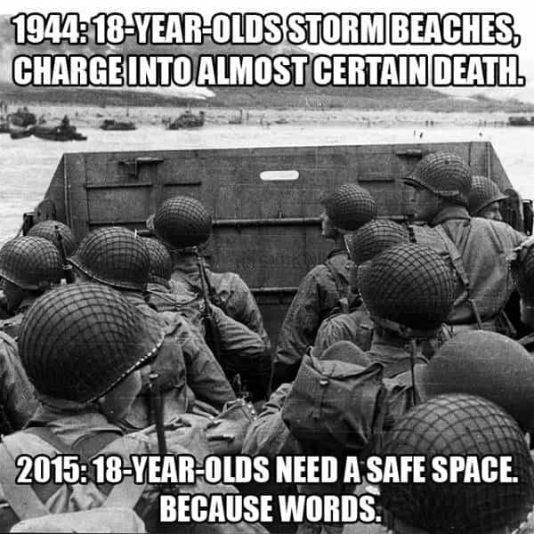

A YouTuber and comedian who taught a pug to perform the Hitler salute to annoy his girlfriend has been convicted of a “hate crime” by a Scottish court. Count Dankula, real name Mark Meechan, fell afoul of the judicial system for supposedly “inciting racial hatred.” He now faces prison time.
Here’s a photo of Meechan being arrested last year:
If the following video suffices as a “hate crime,” can someone please tell me how many Jewish or minority deaths it has caused? The answer is obviously none:
Ricky Gervais, reasonably leftwing in his opinions, was one of those to lambaste the decision:
The move to arrest and prosecute Mark Meechan must be contextualized in a broader law enforcement “un-crackdown” in Britain. “Online abuse” has long taken precedence over violent crimes like burglaries and physical assaults.
Yet women who say or do similar or worse things have their charges dropped
Bahar Mustafa, an overtly political troublemaker and feminist, said “kill all white men” and still had her hate crime charges dropped. The same cannot be said of a comic like Count Dankula.
A feminist student official at Goldsmiths, University of London, Bahar Mustafa, had hate crime charges against her dropped in 2015. She had used social media to say “kill all white men.” She was initially charged under the same piece of legislation as Mark Meechan, the UK Communications Act 2003. The otherwise frequent separation of the English/Welsh and Scottish legal systems does not apply to these kinds of laws, which operate across the United Kingdom.
Unlike Meechan, who runs a shitposting account on YouTube, Bahar Mustafa boasts a history of actual discriminatory actions, including banning whites and men in general from events in her position as a “diversity officer.” She is decidedly more serious and political than a prankster in Scotland whom many in even the English-speaking world struggle to understand. Nevertheless, Mustafa avoided a trial and Count Dankula is reeling from a potential prison sentence.
Is someone like Jimmy Carr next?
The most irreverent and “offensive,” yet also highly popular contemporary comedian I can think of is the Briton Jimmy Carr. Below he is joking about domestic violence, in addition to comparing having a wife to owning a car:
In his shows, a couple of which I have attended, he makes jokes about rape, ethnic minorities, and the disabled. If Count Dankula has been prosecuted, why shouldn’t Jimmy Carr be as well? There is no logical reason why he shouldn’t be, irrespective of the moronic outcomes that the UK Communications Act 2003 and its real-life “in public” equivalents are producing in British courts. It is clear that outside of an auditorium in places like central London, individuals saying comparable things as Jimmy Carr does in one of his shows are at risk of spending a significant stretch in a British jail.
My prediction is that highly arbitrary exceptions will be made for comedians like Jimmy Carr or Ricky Gervais. Less professional “shit-stirrers,” including types like Count Dankula, however, will bear the full brunt of draconian legislation like this. Everyday men and women on the street should expect the same danger of prosecution as well. A joke amongst friends can and shall result in serious legal consequences for a number of people either trying to be funny or expressing themselves in ways that would normally be considered offensive but within the bounds of free speech.
First they came for the university campuses…

It is par for the course that universities would continue to disembowel the principle of free speech. But now the cultural, social, and political erosion is accelerating beyond campuses. Within a few years’ time, will you and those you love be staring down the barrel of a prison sentence for a casual joke?
Read More: England Set To Ban Talking To Women In Public As “Misogynistic Hate Crime”